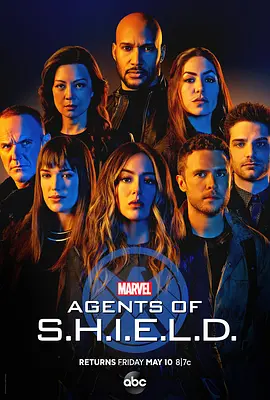

8.6
神盾局特工 第六季
Agents of S.H.I.E.L.D. Season 6
2019
美国
评分 8.6
导演:
克拉克·格雷格 / 珍妮弗·庞 / 凯文·坦查隆 / 杰西·博奇科 / 马克·科尔帕克
演员:
克拉克·格雷格 / 汪可盈 / 伊丽莎白·亨斯屈奇 / 温明娜 / 亨利·西蒙斯
类型:
剧情,动作,科幻
剧情简介
在艰难送别前任局长后，神盾局进入重组阶段，却在稳定下来之前再次遭遇颠覆世界观的冲击。一股神秘势力突袭地球，他们的目标隐秘且行动迅速，留下的痕迹指向未知维度，与现实世界的联系方式似乎被人为撕开。更令人不安的是，一个与科尔森外貌完全一致的陌生人现身，他行事果断而冷酷，几乎没有任何情感波动，他的到来让团队的情绪与判断都陷入混乱。黛西在执行外勤任务的过程中逐渐把自己逼到极限，她试图从敌人的科技中找出维度裂缝的运作机制，却一次次陷入危险；麦克在担任新任局长后面对艰难的权衡，每个决策都牵动团队的命运；西蒙斯与菲兹再度跨越星际寻找彼此，他们的科学直觉在关键节点上发挥决定性作用，却也因真相逼近而承受巨大的心理压力。随着调查深入，敌人的真实目的愈加模糊，他们既不像征服者，也不像破坏者，行为逻辑指向某种更深层的结构性危机。神盾局在不同维度之间奔走，试图拼凑一个逐渐清晰的谜题，而每次穿越、破裂与交错，都意味着新的危险正在逼近。在层层叠加的混乱中，团队开始意识到：这场危机的根源，或许隐藏在他们最熟悉、也最不愿面对的过去。